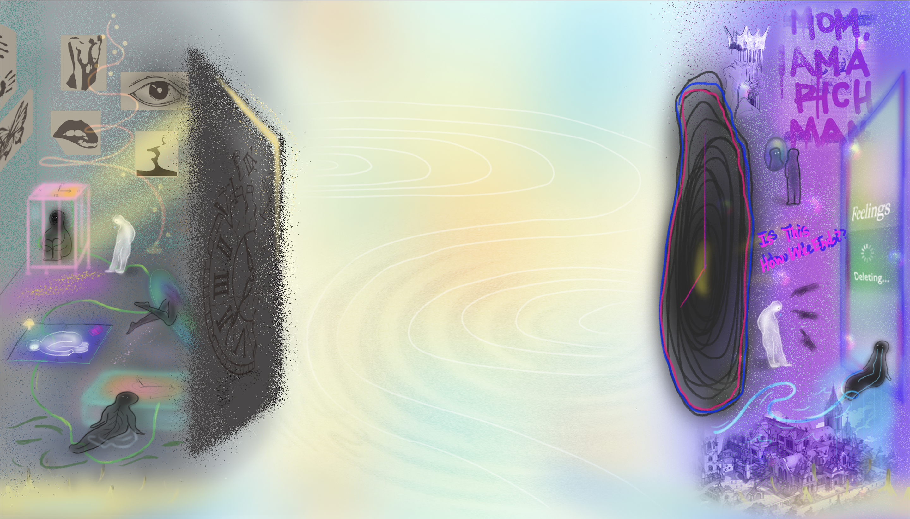

← BACK TO ART14 / ILLUSTRATION
Live in the present
Traditional drawing techniques meet digital colour, line and texture.

ABOUT THE ARTWORK
Figures, drawn lines and grainy textures gather on either side of the composition, connected by soft colour gradients and flowing white curves. The piece combines Procreate, Adobe Illustrator and traditional drawing techniques.
TOOLS & TECHNIQUES
- Procreate
- Adobe Illustrator
- Traditional drawing techniques
STAY CURIOUS / MORE WORK
VIEW ALL PROJECTS ↗